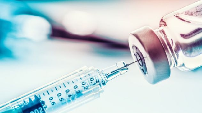

(21) 2767-8175
(21) 2767-8175 celticssaude@gmail.com
celticssaude@gmail.comInformações da COVID-19
no Estado do RJ
no Estado do RJ

O ponto inicial

A Secretaria Estadual de Saúde informou, na tarde da
quinta-feira 05/03/2020, confirmou o primeiro caso do
novo coronavírus no estado do Rio de Janeiro. Uma mulher,
de 27 anos, que esteve na Itália entre os dias 9 e 23 de
fevereiro. Lá, ela visitou Milão, na Lombardia. Depois
ainda seguiu para a Alemanha. Ao retornar, a paciente
procurou uma unidade de saúde na cidade onde mora,
em Barra Mansa, no Sul do Rio.
De acordo com a AgênciaBrasil no dia 19/20 a prefeitura de
Miguel Pereira confirmou a morte causada pela COVID-19,
uma mulher de 63 anos. A idosa, apresentava comorbidades
e fazia parte do grupo de risco para a doença.
Decreto da pandemia
Governo do RJ autoriza isolamento e quarentena contra coronavírus.
O governador do Rio de Janeiro, Wilson Witzel, publicou decreto
ne quarta-feira do dia 11 de março de 2020 autorizando a adoção
de isolamento e quarentena, entre outras medidas, para o combate
ao novo coronavírus (COVID-19) no estado.
Fechamento de comércios
O prefeito do Rio de Janeiro, Marcelo Crivella, determinou
no dia 22 de março de 2020 o fechamento obrigatório do comércio
na cidade a partir de terça-feira (24), com o objetivo de conter
a propagação do novo coronavírus. Com exceções de servirços
essenciais como:
Farmácias;
Supermercados e hortifrútis (com recomendações para ampliar o
serviço para 24 horas);
Padarias (com a recomendação de que se evitem aglomerações);
Pet-shops;
Postos de gasolina (lojas de conveniência, porém, devem ficar fechadas);
Lojas de equipamentos médicos e ortopédicos;
Praça de alimentação de shoppings;
Bares e restaurantes, somente para entrega em domicílio.
Aumento na desigualdade social
Com decreto da quarentena e o fechamento de comércios, deu
início a uma onda de desempregos não só na população
carioca mas todo o brasil foi afetado. Isso forçou na
criação do auxílio emergencial, uma medida do governo
brasileiro para amparar financeiramente a população
durante o enfretamento da pandemia.
Casos e óbitos no Estado do Rio de Janeiro
A região Metropolitana I é a região mais afetada do estado pela
COVID-19 registrando 639.991 casos confirmados e 44.194 óbitos,
22/11/2021.
Já a região Baía da Ilha Grande é a região menos afetada do
estados registrando 25.461 casos confirmados e 823 óbtios
Acompanhe os registros em tempo real acessando
o site sistemas.saude.rj.gov.br
Vacinação
